Agentic performance against every comparator
Positive reductions and gains favour Agentic. The delay interval is the pointwise paired 95% interval for Agentic minus comparator. Holm adjustment applies to the delay tests.
| Comparator | Delay (ms) | Delay reduction | Paired 95% CI (ms) | Holm p | Loss reduction (pp) | Goodput gain |
|---|---|---|---|---|---|---|
| Static | 80.88 | +25.15% | [-27.51, -13.18] | 0.01015 | +1.12 | +1.72% |
| Base LM | 61.30 | +1.23% | [-0.96, -0.55] | 0.001428 | -0.33 | -0.40% |
| Base LM + critique | 61.34 | +1.31% | [-1.00, -0.61] | 0.00119 | -0.33 | -0.40% |
| LoRA policy | 79.40 | +23.75% | [-26.01, -11.70] | 0.01015 | +1.06 | +1.62% |
| Agentic at 5 s | 71.77 | +15.65% | [-14.57, -7.90] | 0.004801 | +0.45 | +0.71% |
| Capacity threshold | 69.04 | +12.31% | [-10.70, -6.30] | 0.001428 | +0.34 | +0.57% |
| Least loaded | 70.85 | +14.55% | [-13.67, -6.95] | 0.007037 | +0.41 | +0.67% |
| Tabular Q | 71.52 | +15.36% | [-14.11, -7.86] | 0.007037 | +0.50 | +0.82% |
| DQN | 61.29 | +1.22% | [-0.96, -0.54] | 0.001428 | -0.33 | -0.40% |
| Two-agent IQL | 61.29 | +1.22% | [-0.96, -0.54] | 0.001428 | -0.33 | -0.40% |
| DPP only | 60.42 | -0.20% | [+0.01, +0.23] | 0.07446 | -0.31 | -0.38% |
| Agentic without LoRA | 60.07 | -0.79% | [+0.34, +0.61] | 0.005371 | -0.33 | -0.39% |
| Agentic without governor | 60.41 | -0.22% | [+0.00, +0.27] | 0.07446 | -0.30 | -0.36% |
Comparison graphs
Select any graph to open the full-size image. DQN and two-agent IQL have identical curves because their executed actions match on every test trace.

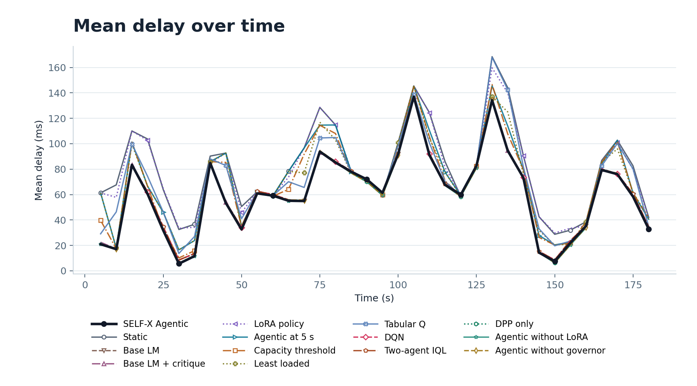

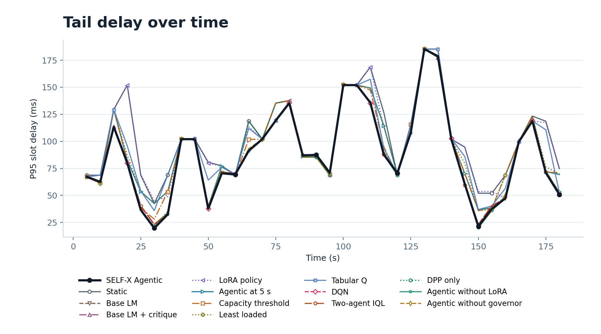

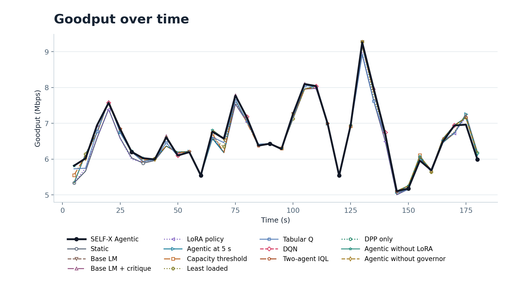

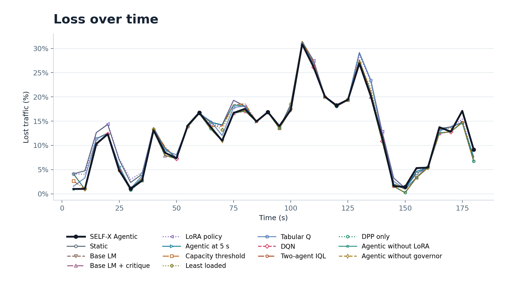

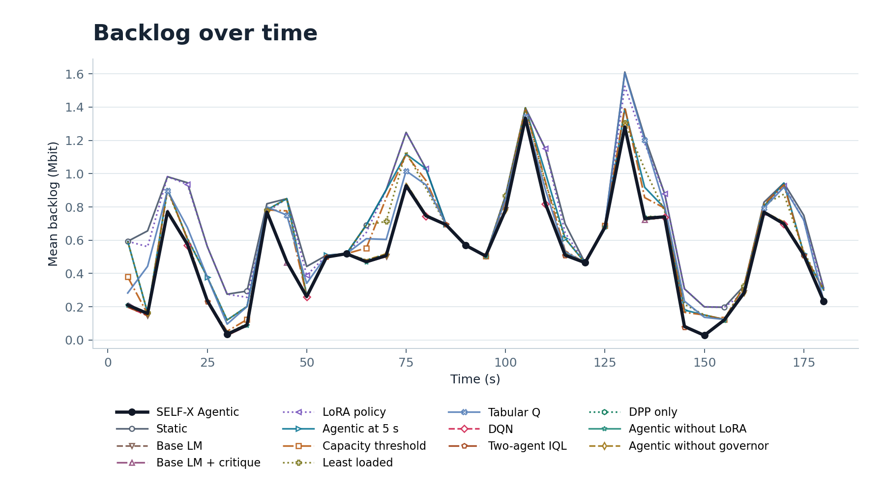

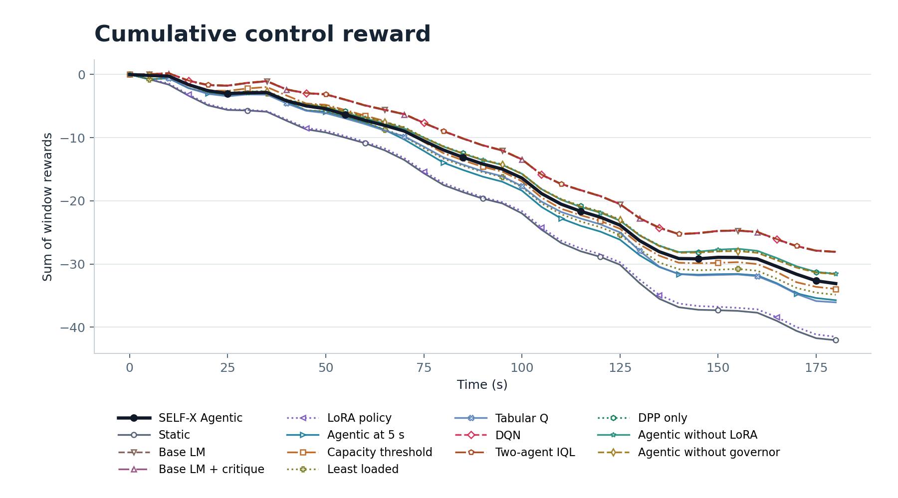

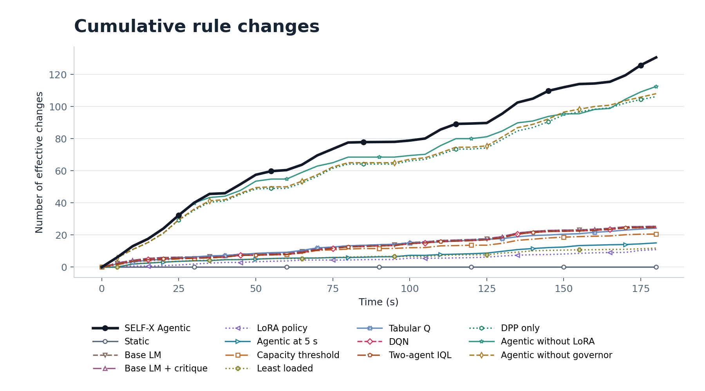

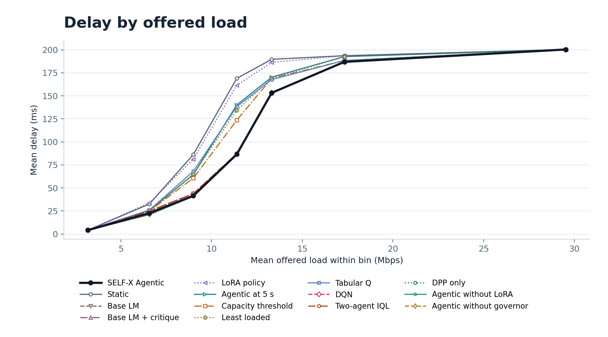

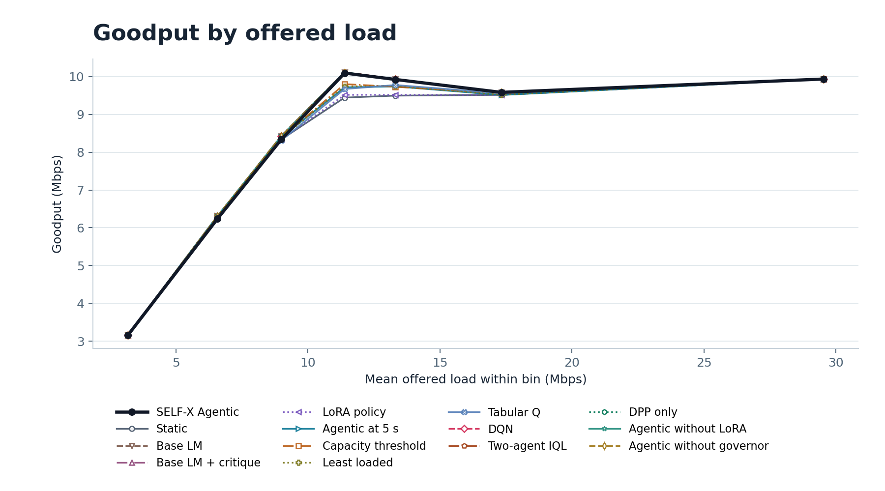

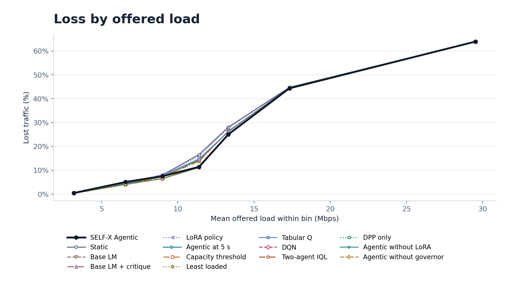

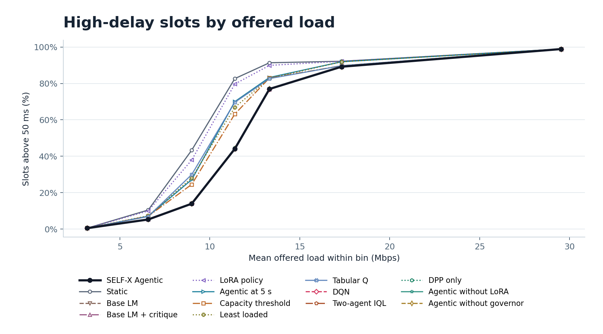

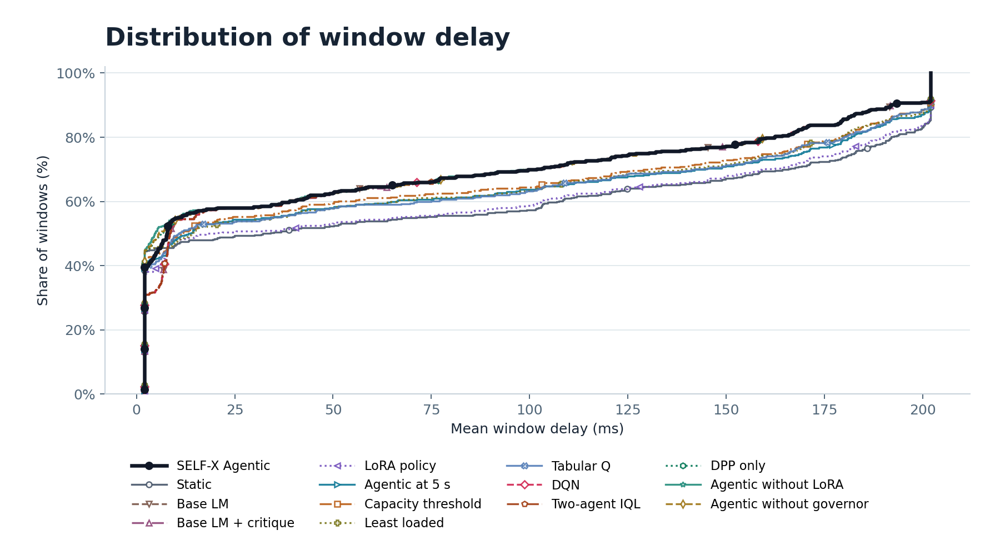

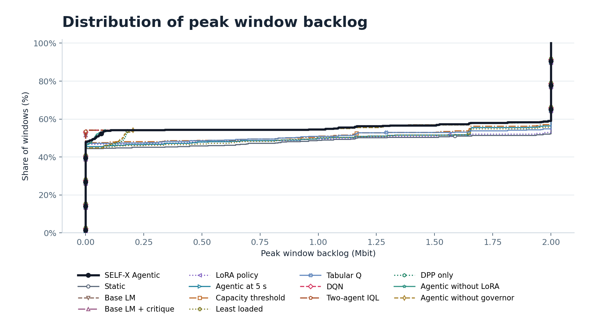